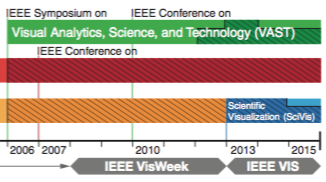

vispubdata.org: A Metadata Collection about IEEE Visualization (VIS) Publications

Venue. TVCG (2016)
Abstract. We have created and made available to all a dataset with information about every paper that has appeared at the IEEE Visualization (VIS) set of conferences: InfoVis, SciVis, VAST, and Vis. The information about each paper includes its title, abstract, authors, and citations to other papers in the conference series, among many other attributes. This article describes the motivation for creating the dataset, as well as our process of coalescing and cleaning the data, and a set of three visualizations we created to facilitate exploration of the data. This data is meant to be useful to the broad data visualization community to help understand the evolution of the field and as an example document collection for text data visualization research.
Link to this page: